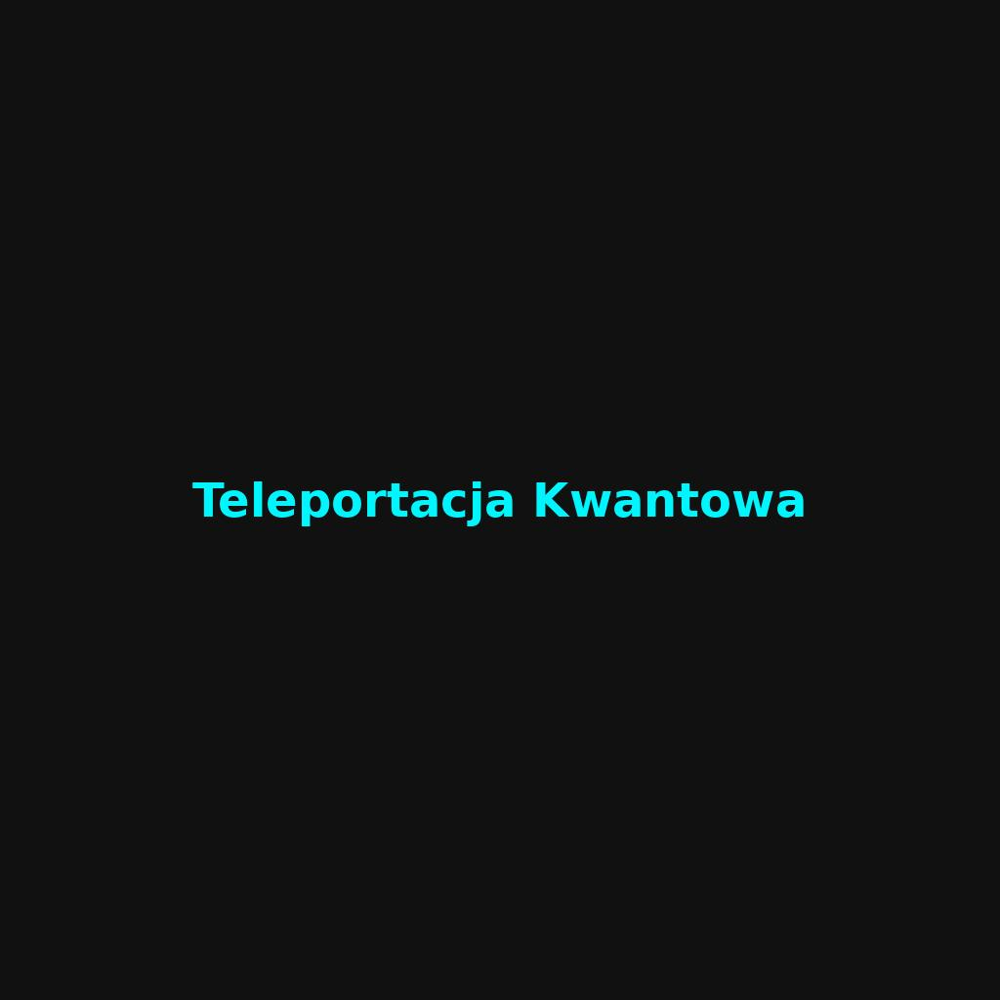

Data: 2025-04-11 | Tagi: fizyka, kwanty, technologia
Teleportacja Kwantowa
Teleportacja kwantowa to jedno z najbardziej fascynujących zjawisk fizyki kwantowej. Nie chodzi o fizyczne przenoszenie obiektów w przestrzeni, lecz o przenoszenie informacji kwantowej między cząstkami.
Wykorzystuje splątanie kwantowe – stan, w którym dwie cząstki są ze sobą nierozerwalnie połączone. Zmiana stanu jednej natychmiast wpływa na drugą, niezależnie od odległości.
To nie tylko ciekawostka – technologia ta może zrewolucjonizować komunikację i bezpieczeństwo danych w przyszłości.